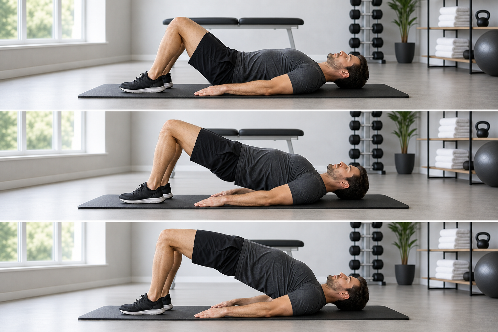

Calm the flare
Use relief positions, short walks, and gentle extension tests only if tolerated.
- 90/90 legs supported
- Hook lying
- Prone lying or sphinx if leg symptoms stay stable
A static, no-tracking guide for lumbar disc irritation with sciatica-style leg symptoms. Use it to know what to do on each day, which exercises to practice, and when to stop.

Repeat this week until symptoms are clearly calmer. If a day feels too much, use the relief day instead of pushing through.
This is the simplest way to increase difficulty without turning the site into a tracker.
Use relief positions, short walks, and gentle extension tests only if tolerated.
Practice light bracing and small movements while breathing normally.
Add low-back-friendly core work once leg symptoms are reliably quieter.
Add later-stage core resistance and lifting mechanics gradually.
Each card shows the dose, clear steps, a stop rule, and a timestamped YouTube demo. Videos open externally.
This page is not a diagnosis or a replacement for a clinician. Use it conservatively, especially with numbness or radiating pain.
Seek urgent care for loss of bladder or bowel control, numbness around the groin/saddle area, loss of feeling in one or both legs, or significant/progressive weakness.
Stop if symptoms travel farther down the leg or into the foot, numbness increases, pain becomes sharp/electrical, or symptoms remain worse after the session.
Short, tolerable movement is generally preferred over prolonged bed rest. Use relief positions briefly, then return to easy walking when possible.
The program is conservative and based on current patient guidance about sciatica, slipped discs, and lumbar disc herniation.
Guidance on symptoms, staying active, when to see a GP, and emergency warning signs.
Explains radiating sciatic pain, nonsurgical treatment, movement, and short walks.
Patient information on symptoms, walking as tolerated, avoiding bed rest, and urgent neurologic signs.